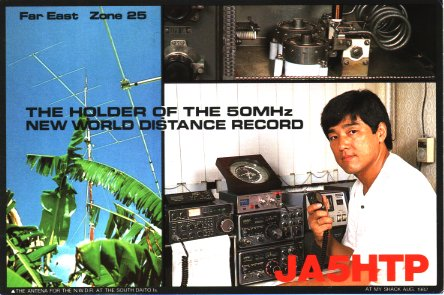

|
* 50MHz DX QSO Record *
50MHzのDX-QSO記録(交信距離)を延ばすことは、その昔から興味あるものでした。
現在のようにオーバーシーズ QSOはおろか、Esによる国内DXも経験しなかった頃には、
グランドウエーブ(GW)による到達距離を競っていたのです。
VHFは見透し距離以外には飛ばないと信じていた頃のお話です。
1953年7月14日、初めてのEsによるQSOがJA1FC−JA6BVによって行われてからは、DX−QSOに対する考え方も大きく変わりました。
EsによるQSOは、当然のことながら日本の最南(JA6)と最北(JA8)のQSOまで伸び50MHzの「交信記録」となりました(当時はまだ沖縄は別カントリーだった)。
見透し距離だけしか飛ばないと思われていた50MHzの電波が、HF並みに遠距離まで到達する事がわかり、
ますます興味あるバンドとして見直されたのです。
さらに、1956年1月22日にはJA1AHSが、オーストラリアのVK4NGとのQSOに成功して、
50MHzの電波も外国まで飛ぶ事が判り、6mのDX−QSOは海外へ目を向けられたのです。
ちょうどこの時期はサイクル19のピークに向けてコンデションも上昇中だったこともあり、
DX-QSO熱は一気に盛り上り、交信記録の相手は外国の局が対象となったのです。
前置きが長くなりましたが、50MHzのDX-QSOの記録は、地球上の2点間でQSOした「最遠」、
すなわち「対蹠点」(地球の裏側)とのQSOを意味しています。
電波が相手に到達する経路には、大きく分けて最短距離で飛ぶショートパスと、地球の反対側から回って飛んで行くロングパスがあります。
当然、地球の裏側から遠回りしていくロングパスの方が飛んでいく距離は長いのですが、
記録として認められるのは「最短距離」で飛ぶショートパスの方でカウントする事になっています。
電波は地表上の「空間」を飛んで行くために、正確な「飛距離」を測ることは困難ですが、
「記録」の測定距離は2局間の「地表上の距離」で表すことになっているのです。
* 50MHz DX QSO Recordへの挑戦 *
1956年3月2日、JA6FR(佐賀県)が南米アルゼンチンのLU9MAとQSO、交信距離は19,000Kmを超えるものでした。
その後もJA6FRは南米ブラジルとのQSOに成功、1958年にはPY3BWとのQSOで交信記録を19,810Kmに伸し、
このQSOの記録が長い間、「50MHz・DXの世界記録」とされてきました。
それでは南米とQSOしたJA局が大勢いたにもかかわらず、なぜ日本のJA6FRが記録保持者として“君臨”していたのでしょうか。
この疑問は対蹠地点の地図をご覧になれば一目瞭然です。
そうです、地図でも判るように、日本本土から「QSO相手の居る」対蹠点のブラジル(陸地)に最も近づけるのは、
日本の最南の「九州」だったのです。

日本では、北に行けば行くほど、対蹠点となる地球の裏側では、QSO相手のいない「海」に出てしまい、
記録を破るQSOが物理的に不可能になることが判ります。
これを見ると、「完全な」対蹠点となる場所は、“日本本土”には無いことが判ります。
話しは少し戻りますが、この「対蹠点」は地球上のどこの場所にもあるわけです。
しかし、記録を達成するためには“その場所”にQSO相手がいるかどうかがキーポイントになります。
たとえば、北米の様に対蹠点が「インド洋上」になるところではQSOは不可能となります。
対蹠点に陸地があり、QSOの相手となる局がいるときには「記録更新」の可能性はあるのです。
このQSO記録を、より対蹠地点に近づけようと、記録にチャレンジした局がいました。 徳島のJA5HTP・山野さんです。
徳島県は九州よりも北ですから、当然“Home QTH”からでは記録を更新することは出来ません。
そこで考え出したのは、対蹠点に近い場所に移動してQSOするということでした。
山野さんが運用場所として“目を付けた”のは「南大東島」でした。
南大東島は沖縄本土よりもはるかに東寄りに位置しているため、対蹠点となるブラジル本土(陸地)では、
QSO相手が多いと思われる都市部に近い場所になることでした。
ブラジル側の運用地によっては「完全」な対蹠点とのQSOも夢ではなかったのです。
JA5HTPは入念なスケジュールのもと、1981年と1982年の2回に渡り「世界記録」に挑戦したのです。
* 50MHz DX Record 更新*
JA5HTPが記録更新に挑戦するために選んだ運用場所の南大東島は、最近使われるているグリットロケーター(GL)で表示すると、
PL55(北緯25.49.51、東経131.13.59)でした。
結果は、1981年4月2日にPP5WL、PP5AJFとのQSOに成功、相手の運用場所はRIO DE SUL(南緯27.12.55、西経49.38.30)、
GLはGG52でした。この記録は僅かながらJA6FRとPY3BWのQSO記録を超えるものでした。
翌年の1982年3月12日、あらかじめスケジュールを組んで対蹠点近くに移動してくれていたPY5BAB/PY5、PY5WKC/PY5とのQSOに成功、
更に記録を伸ばしたのです。 相手の運用場所はCUBATAO(南緯25.52.00、西経48.44.20)、GLはGG54でした。
南大東島からのベストポイントは、南緯25.49.51、西経48.46.01(GLは同じGG54)となり、誤差を含めても5Km以内に迫る記録となりました。
この記録達成に際して、「約20.000Kmを超える記録」というだけで、正確な距離の表示はされませんでした。
JA6FRが記録した19.810Kmの記録から、更に対蹠点に近づいたことは確かだったのですが、残された距離は、
ほとんど「誤差」の範囲、との見方もあったからです。
これは地球の形状がピンポン玉のように円形ではなく、「西洋梨」のようにいびつになっていて、対蹠点と一口に言っても、
2点間の距離は地球上の場所によってそれぞれ異なる、という理由からでした。
地球の赤道上の外周は40,075.2Kmと言われています。 それに対して南極と北極を結ぶ外周(子午線)は40,008Kmと、70Km近く短かいのです。
(参考=国立天文台編・理科年表)
さらに、外周は南極側がつぶれた状態なので、その形状から「西洋梨」状態と言われているのです。
このことは、対蹠点が赤道上にあるならば(相手も当然赤道上)、2点間の距離は40,075.2Kmの半分の約20.038Kmとなりますが、
子午線上同志なら、40.008Kmの半分の20.004Kmの距離にしかなりません。
すなわち、20.004Kmから20.038Kmの間のどの距離が、自分に該当する対蹠点との距離になるのかを計算する必要があります。
計算には、複雑な「計算式」(双方の正確な緯度、経度に定数を加えることによりある程度は可能といわれる)が必要になってくるのです。
JA5HTPの記録は数値による表示はされなかったものの、より対蹠点(地球の裏側)に近づいた事は事実であり、
前の記録とほとんど離れていない場所からの運用だったことなどから、距離的にも記録を更新したことは想像出来ます。
なによりも、僅かな距離とはいえ「残された記録」にトライした努力は、高く評価されるものです。
最近、インターネットの情報のページに「British Isles 50MHz Record QSO」として、
VK3AKK-DJ4ICDの17,100Kmの記録が取り上げられていました。
また、オーストラリアの資料によるQSO記録としては、VK2FLR-CU3/N6AMGの19,424Kmが記録されています。
いずれにしても、JA5HTPの記録は“究極”の対蹠点(地球の裏側)に限りなく近いQSOと言えるでしょう。
(完)

|